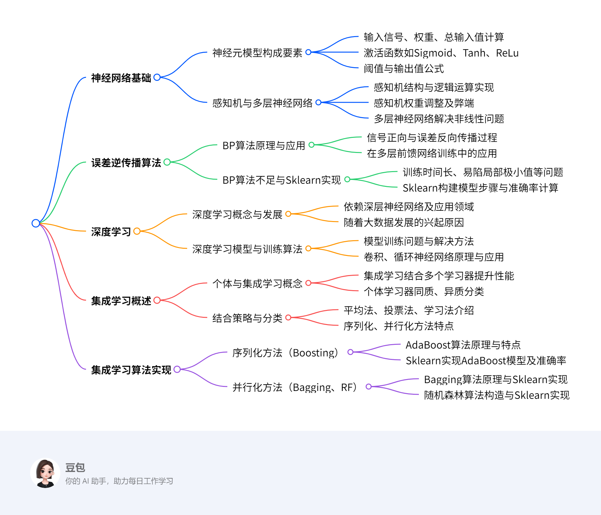

第五章：分析方法初步3¶
概览¶
一段话总结¶
本文围绕机器学习分析方法展开，介绍了神经网络和集成学习两大板块。神经网络中，从神经元模型出发，阐述其结构、激活函数，感知机及其局限性，多层神经网络的构建与应用；误差逆传播（BP）算法的原理、不足与Sklearn实现；深度学习的概念、发展、训练算法及卷积神经网络、循环神经网络等应用。集成学习方面，说明其通过结合多个学习器提升性能，涵盖结合策略、分类（序列化和并行化方法），并以Sklearn实现投票集成、AdaBoost、Bagging和随机森林算法，展示各算法在不同数据集上的应用及准确率 。
¶
详细总结¶
- 神经网络
- 神经元模型：神经网络模拟人脑神经元功能，神经元模型是其基本组成单位。神经元接收输入信号\(I_{1}, I_{2}, \cdots I_{n}\)，通过权重\(W_{1}, W_{2}, \cdots W_{n}\)计算总输入值\(SUM = I_{1}W_{1}+I_{2}W_{2}+\cdots+I_{n}W_{n}\) ，经激活函数\(f\)处理（如Sigmoid函数\(f(x)=\frac{1}{1+e^{-x}}\)、Tanh函数\(f(x)=\frac{e^{x}-e^{-x}}{e^{x}+e^{-x}}\)、ReLu函数\(f(x)=max (0, x)\) ），与阈值\(T\)比较后输出\(y=f(SUM - T)\)。
- 感知机与多层神经网络
- 感知机：由输入层和输出层两层神经元组成，能实现逻辑与、或、非运算，如与操作（\(w_{1}=w_{2}=1\) , \(T=1.5\)时，\(x_{1}=x_{2}=1\) ，\(y = 1\) ） 。通过训练数据集学习权重和阈值，权重调整规则为\(w_{i} \leftarrow w_{i}+\Delta w_{i}\)，\(\Delta w_{i}=\eta(y-\hat{y})x_{i}\)（\(\eta \in(0,1)\)为学习率）。但感知机只能处理线性可分问题。
- 多层神经网络：为解决非线性可分问题，在输入层和输出层间添加多层隐含层，形成多层前馈神经网络。其学习过程与感知机类似，通过调整权重和阈值收敛到正确结果，如对鸢尾花数据集进行类别预测。
- 误差逆传播算法（BP算法）
- 原理与应用：BP算法用于多层神经网络训练，学习过程包括信号正向传播和误差反向传播。信号正向传播时，输入样本经隐含层至输出层，若输出与期望不同则进行误差反向传播，将误差分摊给各神经元，用梯度下降法调整权值和阈值。多层前馈网络常被称为BP神经网络，BP算法也适用于其他网络训练。
- 不足与Sklearn实现：BP算法存在训练时间长、易陷入局部极小值、喜新厌旧等问题。使用Sklearn库构建神经网络模型对鸢尾花数据集分类，步骤包括获取数据集、构建模型（调用
MLPClassifier）、计算准确率，训练集准确率达0.981，测试集为0.933。
- 深度学习
- 基本概念与发展：深度学习是流行的机器学习方法，依赖深层次神经网络，在多领域性能超传统方法，如人脸识别、Alpha GO围棋程序等。随着大数据发展，其复杂模型受关注，通过增加隐含层提升数据表达和学习能力。
- 模型训练与算法：网络深度增加使传统BP算法难以收敛，采用无监督逐层训练（先预训练，再用BP算法微调）和权值共享策略（如卷积神经网络CNN）。CNN适用于图像识别等领域，运用局部感受野概念，通过卷积和池化操作处理图像。循环神经网络RNN用于处理时间序列数据，LSTM解决了RNN的梯度消失问题。深度学习应用广泛，包括图像识别、自动驾驶、语音识别等。
- 集成学习
- 概述
- 个体与集成：集成学习结合多个学习器完成任务，提升泛化性能。个体学习器由已有算法产生，同质集成的个体学习器叫基学习器，异质集成的叫组件学习器。弱学习器泛化性能略优于随机猜测，集成学习将其 变为强学习器。
- 结合策略与分类：结合策略有平均法（算术平均\(H(x)=\frac{1}{n} \sum_{i=1}^{n} h_{i}(x)\)、加权平均\(H(x)=\frac{1}{n} \sum_{i=1} w_{i} h_{i}(x)\) ）、投票法（相对多数、绝对多数、加权投票）、学习法（如stacking）。根据个体学习器生成方式，集成学习分为序列化方法（个体学习器强依赖，串行生成，如Boosting算法族）和并行化方法（个体学习器相互独立，并行生成，如Bagging、随机森林）。
- 序列化方法（以AdaBoost为例）：基于PAC可学习型理论，先训练一个基学习器，根据其表现调整样本分布，使错误样本受更多关注，再训练下一个基学习器，最后加权结合。AdaBoost是Boosting中常用方法，由Yoav Freund和Robert E. Schapire在1995年提出，可使用多种方法构建子分类器，简单且不易过拟合。用Sklearn为鸢尾花数据集构建AdaBoost模型，设置弱学习器数量为100，准确率达0.9599673202614379。
- 并行化方法
- Bagging：基于自助采样法获取数据集，对每个采样集训练基学习器，分类用投票法，回归用平均法。用未被采样样本作验证集估计泛化性能。用Sklearn为鸢尾花数据集构建Bagging集成模型，以KNN为基学习器，准确率为0.9464869281045751。
- 随机森林（RF）：Bagging和决策树结合，对训练样本和特征抽样，基学习器是决策树，预测结果为子树结果平均值。具有降噪性，可用于回归和分类任务，查看特征重要性，但树增多运算会变慢。构造过程包括有放回选样本、随机选属性分裂节点等步骤。用Sklearn为鸢尾花数据集构建RF集成模型，设置参数
n_estimators=10，max_features=2，准确率为0.9599673202614379。
- 概述
关键问题¶
- 感知机为什么只能处理线性可分问题？
- 感知机只有一层功能神经元，其学习能力有限。它通过权重和阈值对输入信号进行简单的线性组合和判断，仅能找到一个超平面将数据分为两类。对于非线性可分的数据，无法用这样简单的线性模型找到合适的分类边界，权重会产生震荡，无法收敛到正确结果，比如无法解决异或问题。
- 深度学习中卷积神经网络的局部感受野概念有什么优势？
- 局部感受野概念认为图像中局部像素联系紧密，远距离像素相关性弱。每个神经元只需对局部进行感知，减少了神经元需要处理的信息，降低了计算量。同时，在更高层将局部信息综合起来能得到全局信息，避免了传统识别算法中复杂的特征提取过程，使得卷积神经网络可以直接以图像作为输入，更高效地提取图像特征，在图像识别等领域表现出色。
- 集成学习中序列化方法和并行化方法的主要区别是什么？
- 序列化方法中个体学习器之间具有强依赖关系，必须串行生成。如Boosting算法，先训练一个基学习器，根据其表现调整样本分布后再训练下一个，通过这种方式让后续学习器更关注前面学习器分类错误的样本 。而并行化方法中个体学习器之间不存在强依赖关系，可同时并行生成。像Bagging和随机森林，通过对训练数据集采样出不同子集，在各个子集上独立训练基学习器，然后将这些基学习器结合起来，各基学习器训练过程相互独立。
5.6 神经网络¶
5.6.1 神经元模型¶
该节主要介绍了神经网络中的神经元模型，内容如下：
- 神经网络与神经元概述：神经网络通过对人脑神经元的建模和连接，模拟人脑神经系统功能，具备学习、联想等智能信息处理能力，其学习结果存储于突触连接中。神经元细胞从树突接收信号，经细胞体计算是否达传递阈值，再由轴突决定是否传递信号给其他神经元。
- 神经元模型构建：神经元模型是神经网络的基本组成单位。人工神经网络对神经元进行建模，模拟生物神经元信息处理的输入、处理、输出三个阶段，分别对应树突、细胞体和轴突。
- 神经元结构：

- 输入信号：用 \(I_{1}, I_{2}, \cdots I_{n}\)表示。
- 权重：以 \(W_{1}, W_{2}, \cdots W_{n}\)代表，权重决定了每个输入信号对神经元的影响程度 。
- 总输入值：通过公式 \(SUM = I_{1}W_{1}+I_{2}W_{2}+I_{3}W_{3}+\cdots+I_{n}W_{n}\)计算得出，反映了所有输入信号综合作用的结果。

- 激活函数：将神经元的输入映射到输出端，为网络引入非线性特性。常见的激活函数有：
- Sigmoid函数：呈S型生长曲线，常被用作神经网络的阈值函数，能将变量映射到\(0\)到\(1\)之间，公式为\(f(x)=\frac{1}{1+e^{-x}}\)。
- Tanh函数：由双曲正弦和双曲余弦推导而来，公式是\(f(x)=\frac{e^{x}-e^{-x}}{e^{x}+e^{-x}}\) 。
- ReLu函数：用于隐层神经元输出，公式为\(f(x)=max (0, x)\)，即当\(x>0\)时，输出为\(x\)；当\(x\leq0\)时，输出为\(0\)。
- 阈值：是神经元从抑制状态转变为兴奋状态的临界值。
- 输出值：根据公式\(y = f(SUM - T)\)计算得到，是神经元最终的输出结果。
5.6.2 感知机与多层神经网络¶
该节主要介绍了感知机与多层神经网络，具体内容如下：
- 感知机

- 结构：感知机由输入层和输出层两层神经元组成，输入层负责接收并传递输入信号，输出层的功能神经元对信号进行处理。它是人工神经网络的最简形式。
- 逻辑运算实现：感知机可实现逻辑与、或、非运算。以阶跃函数\(f(x)=\begin{cases}1, & x>0 \\ 0, & x<0\end{cases}\)为激活函数时，如与操作（\(w_{1}=w_{2}=1\) ，\(T = 1.5\) ，\(x_{1}=x_{2}=1\) 时，\(y = 1\) ）；或操作（\(w_{1}=w_{2}=1\) ，\(T = 0.5\) ，\(x_{1}=1\)且\(x_{2}=1\) 时，\(y = 1\) ）；非操作（\(w_{1}=-1\) ，\(w_{2}=0\) ，\(T=-0.5\) ） 。
- 权重调整策略：感知机通过训练数据集学习权重和阈值，将阈值视为输入为 -1 的结点权重，转化为权重学习问题。对于训练样例\((x,y)\)，若当前输出为\(\hat{y}\)，权重调整规则为\(w_{i}\leftarrow w_{i}+\Delta w_{i}\)，\(\Delta w_{i}=\eta(y - \hat{y})x_{i}\) ，\(\eta\in(0,1)\)为学习率，依据预测偏差调整权重。
- 弊端：感知机学习能力有限，只能处理线性可分问题，即存在超平面能将数据分为两类的情况。处理非线性可分数据时，权重会震荡无法收敛，比如无法解决异或问题。
- 多层神经网络
- 结构与原理：为解决非线性可分问题，在输入层和输出层间添加多层隐含层，形成多层前馈神经网络。每层神经元与下层全互连，同层及跨层无连接。其学习过程和感知机类似，通过训练数据集调整权重和阈值以收敛到正确结果。
- 应用示例：以鸢尾花数据集类别预测为例，网络输入包含花萼长度、宽度，花瓣长度、宽度四个属性，经隐层处理后在输出层得到鸢尾花的三个品种预测结果，通过比较输出层结点值大小确定最终预测类别。
5.6.3 误差逆传播算法¶
该节主要介绍了误差逆传播（BP）算法，包括其应用、原理、不足以及在Sklearn库中的实现，具体内容如下：
- BP算法应用：
- 算法提出背景：随着多层神经网络层数增多，感知机的权重调整规则无法满足需求，误差逆传播（BP）算法应运而生。它是训练多层神经网络的重要算法。
- 发展历程：由Werbos于1974年提出，1985年Rumelhart等人对其进行发展。
- 应用范围：多层前馈网络训练常采用BP算法，因此多层前馈神经网络常被称为BP神经网络。此外，它还可用于训练其他类型的网络。
- BP算法原理：
- 信号正向传播：输入样本从输入层进入网络，经隐含层逐层传递至输出层。若输出层实际输出与期望输出（样本标签）相同，学习算法结束；若不同，则进入误差反向传播阶段。
- 误差反向传播：将输出误差按原通路反向传递至输入层，在反向传递过程中把误差分摊给各层神经元，得到各层神经元的误差信号，以此作为修正神经元权值的依据。使用梯度下降法调整各层神经元的权值和阈值，使误差信号降至最低。
- BP算法的不足：
- 训练时间较长：对于某些特殊问题，运行时间可能长达数小时甚至更久，主要原因是学习率太小，可采用自适应学习率进行改进。
- 易陷入局部极小值：BP算法采用梯度下降法，从某一起始点沿误差函数斜面逐渐达到误差最小值。不同起始点可能导致不同的极小值，无法保证得到误差超平面的全局最优解。
- 喜新厌旧：训练过程中，学习新样本时存在遗忘旧样本的趋势。
- Sklearn实现BP神经网络算法：
- 数据集获取：利用Sklearn库的datasets模块直接导入iris数据集。
- 模型构建：导入sklearn的neural_network模块，调用MLPClassifier构建神经网络模型。可通过修改激活函数、每层神经元个数、优化算法、学习率、最大迭代次数等参数优化网络模型。
- 准确率计算：计算模型在训练集和测试集的识别准确率。代码实现后，得到神经网络模型训练集的准确率为0.981，测试集的准确率为0.933。
5.6.4 深度学习¶
该节主要围绕深度学习展开，涵盖其基本概念、发展历程、模型训练、应用以及相关神经网络等内容，具体总结如下：
- 基本概念：深度学习是21世纪初流行的机器学习方法，依赖深层次神经网络。在图像识别、语音识别等多领域性能超越传统机器学习方法，如在人脸识别比赛LFW和自然图像分类比赛ImageNet中表现超人类，Google的Alpha GO围棋程序击败人类棋手。其流行得益于Hinton教授2006年在Science杂志发表的论文，提高了深度神经网络模型训练效率。
- 发展历程：随着大数据时代来临，训练数据增多减少了过拟合现象，深度学习这类复杂模型受到关注。深度学习模型通过增加隐含层数量，增强了对数据的表达和学习能力。
- 模型训练问题及算法
- 问题：网络深度增加，传统BP算法在误差逆传播时难以收敛到稳定状态。
- 训练算法：无监督逐层训练，先预训练分组参数，得到局部较优值后用BP算法微调，减少训练开销；权值共享策略，如卷积神经网络（CNN）让一组神经元使用相同权重，降低网络参数选择复杂度。
- 应用领域：深度学习应用广泛，涉及图像/视频识别、语音识别、自然语言处理等。在图像和视频方面，可识别物体、分类搜索照片；应用于自动驾驶系统识别路况信息；还用于人脸识别实现刷脸支付等。
- 相关神经网络
- 卷积神经网络（CNN）：适用于图像识别、语音分析等领域。其神经元共享权值，减少自由参数个数，可直接以图像为输入，避免复杂特征提取。运用局部感受野概念，通过多层卷积与池化组合处理图像，卷积是对矩形图像区域加权和操作，池化用于缩小图像、保留重要信息。
- 循环神经网络（RNN）：适合处理样本时间顺序重要的任务，如自然语言处理、语音识别。通过让网络下一时刻状态与当前时刻相关，将上次隐藏层输出作为本次输入，对时间关系进行建模。
- 长短期记忆模型（LSTM）：本质是RNN，解决了RNN训练时严重的梯度消失问题，即误差梯度随时间差快速下降，导致难以学习远距离时间影响。被广泛应用于时间序列预测、机器翻译、语音识别等众多场合。
图的表示学习¶
该节主要介绍了图表示学习，涵盖其概念、应用场景、浅层模型和深层模型，具体内容如下：
- 图表示学习概念：图表示学习旨在将网络中的节点嵌入到低维向量空间。这样做有诸多优势，一方面便于进行并行计算，另一方面能够应用经典机器学习算法来处理相关任务。
- 应用场景：在得到低维向量表示后，可应用于多种场景，包括节点分类（对网络中的节点进行类别划分）、链接预测（预测节点之间是否存在链接关系）、社团检测（发现网络中紧密连接的子群体）、网络进化（研究网络结构随时间的演变规律 ）等。
- 浅层模型：
- 基于因子分解的方法：如拉普拉斯特征映射，通过对相关矩阵进行因子分解，提取关键特征来实现节点在低维空间的表示。
- 基于随机游走的方法：以DeepWalk为代表，通过在图上进行随机游走生成节点序列，再利用这些序列学习节点的低维向量表示。
- 深层模型：
- 针对图应用深度神经网络的方法：借助深度神经网络强大的特征学习能力，对图结构数据进行处理，获取节点的有效表示。
- 基于自动编码机的方法：例如DNGR、SDNE，利用自动编码机的结构，将图数据编码为低维向量，再通过解码重构数据，在这个过程中学习到节点的低维表示。
- 基于图神经网络的方法：像GCN、GAT，专门针对图结构设计神经网络架构，直接对图数据进行卷积等操作，从而得到节点的低维向量表示，有效捕捉图中节点的局部和全局结构信息。
5.7 集成学习¶
5.7.1 概述¶
该部分主要介绍集成学习的基本概念、结合策略、分类方式以及使用Sklearn实现投票集成策略，具体内容如下：
- 个体与集成：集成学习并非单一算法，它通过训练多个个体学习器，并采用特定结合策略形成集成学习器，以获得比单一学习器更优的泛化性能。个体学习器由已有算法从训练数据产生，若个体学习器同类型，集成是同质的，其中个体学习器叫基学习器，对应算法叫基学习算法；若不同类型则为异质集成，个体学习器叫组件学习器。弱学习器指泛化性能略优于随机猜测的学习器，集成学习旨在将弱学习器变成强学习器。
- 结合策略
- 平均法：用于数值类回归预测，有算术平均（公式：\(H(x)=\frac{1}{n} \sum_{i=1}^{n} h_{i}(x)\)）和加权平均（公式：\(H(x)=\frac{1}{n} \sum_{i=1}^{n} w_{i}h_{i}(x)\) ）。一般个体学习器性能差异大时用加权平均，差异小时用算术平均。
- 投票法：用于分类问题预测。相对多数投票法选预测次数最多的类别为最终分类，若多个类别得票最高则随机选；绝对多数投票法要求输出类别在预测结果中过半，否则拒绝预测；加权投票法用每个弱学习器分类票数乘以权重后求和，最大和对应的类别为最终结果。
- 学习法：以stacking为代表，用另一个学习器结合预测结果。将弱学习器学习结果作为输入，训练集输出作为输出，重新训练一个学习器得到最终结果，其中弱学习器叫初级学习器，用于结合的叫次级或元学习器。
- 集成学习分类：根据个体学习器生成方式，分为序列化方法（个体学习器强依赖，串行生成，如Boosting算法族：AdaBoost、GBDT、Xgboost）和并行化方法（个体学习器相互独立，可并行生成，如Bagging、随机森林RF）。
- Sklearn实现投票集成策略
- 原理与方式：投票法是针对分类问题的结合策略，根据机器学习算法输出类型，分为直接输出类标签的硬投票和输出类概率的软投票。
- 实现步骤：以新闻分类数据集20newsgroups为例，先导入数据集并划分训练集和测试集；接着用TF - IDF将文本转为特征向量；然后在Sklearn的ensemble模块中用VotingClassifier构建投票分类器，采用软投票方式对支持向量机、逻辑回归、决策树三种分类器进行投票；最后计算并对比各模型准确率，结果显示集成后的VotingClassifier准确率为0.9301 ，高于部分单一模型（逻辑回归0.8868、决策树0.6864、SVC 0.9208 ）。
5.7.2 序列化方法¶
该部分聚焦集成学习序列化方法，详细介绍Boosting算法、AdaBoost算法及在Sklearn库中的实现，还给出了AdaBoost算法的具体实现步骤，具体内容如下：
- Boosting算法核心要点
- 思想起源：基于PAC可学习型理论，Valiant和Kearns提出弱、强学习算法等价性问题，即能否提升弱学习算法为强学习算法，若能，则无需艰难寻找强学习算法。
- 工作与建模：工作机制是先训练一个基学习器，依据其表现调整样本分布，使错误样本受更多关注，再训练下一个基学习器，重复此过程后加权结合所有基学习器。建模过程为迭代且线性，给样本附权重，在多次迭代中提高难分类样本权重，训练时权重高的样本更易被采样。
- 权重设置逻辑：初始时样本权重相同，模型预测后，分类失败样本权重加大，成功样本权重降低，使得下一轮训练时，权重高的数据更易被采样，新的基学习器更关注易出错样本的分类。
- AdaBoost算法关键信息
- 基本情况：1995年由Yoav Freund和Robert E. Schapire提出，英文全称“Adaptive Boosting”，是Boosting中常用的实现方法。
- 性能优势：将多个不同决策树非随机组合，能显著提升决策树准确率，可与SVM相媲美；运行速度快，基本无需调参；几乎不会出现过拟合情况。
- 算法特点：可采用多种方法构建子分类器，AdaBoost提供组合与提升框架；使用简单分类器时结果易理解；弱分类器构造简单，无需特征筛选；算法本身简单，无需调整分类器，不易过拟合。
- 应用场景：适用于二值分类和多分类任务；可用于特征选择；无需改动原有分类器，通过新增分类器提升整体性能。
- Sklearn实现AdaBoost算法流程
- 实现步骤：以鸢尾花数据集为例，从Sklearn库的datasets导入iris数据集；从ensemble模块选择AdaBoostClassifier模型，设置参数n_estimators（此处设为100）控制弱学习器数量，用train_test_split方法划分数据集，fit方法训练，predict方法获取预测结果，最后计算模型在训练集和测试集的识别准确率。
- 代码结果：代码运行结果显示，AdaBoost模型在鸢尾花数据集上的准确率为0.9599673202614379。
- AdaBoost算法实现步骤
- 初始化样本权重，对于n个样本的数据集，每个样本权重\(w_1(i)=\frac{1}{n}\) 。
- 训练集的抽样子集，训练出第k个基础模型\(b_k(x)\)。
- 计算基础模型误差率\(e_k = \sum_{i = 1}^{n}w_k(i)·I(b_k(x_i)≠y_i)\)，其中\(y_i\)是样本标记值，\(b_k(x_i)\)是预测值，预测正确时\(I(x)=0\)，否则\(I(x)=1\)。
- 计算模型权重值\(\alpha_k = \frac{\ln(1 - e_k)}{e_k}\)，模型误差率低时，权重值更大。
- 根据新模型预测值更新训练集权重\(w_{k + 1}(i)= w_k(i)·e^{\alpha_k}·F(b_k(x_i)≠y_i)\)，预测正确时\(F(x)= - 1\)，错误时\(F(x)=1\) 。
- 跳转回第2步，直到k到达指定值退出循环。
5.7.3 并行化方法¶
该节主要介绍了集成学习中的并行化方法，包括Bagging算法和随机森林（RF）算法，以及在Sklearn库中实现这两种算法的过程，具体内容如下：
- 并行化方法核心要点
- 方法原理：并行化方法旨在让个体学习器相互独立。通过对给定训练数据集采样出若干有重叠的不同子集，保证子集数据量有差异，再从每个子集训练出基学习器，以此确保基学习器间无较强依赖关系。
- Bagging算法详解
- 算法原理：Bagging是并行化集成学习的典型代表，基于自助采样法获取数据集。从原始数据集有放回地选择T次得到T个新数据集，基于每个采样集训练一个基学习器。在结合预测输出时，分类任务用简单投票法，回归任务用简单平均法。
- 采样优势：自助采样法的优势在于，每轮随机采样中，训练集约36.8%的数据未被采样，这些数据可用作验证集，评估模型的泛化性能。
- Sklearn实现：以鸢尾花数据集为例构建Bagging集成模型，使用Sklearn的ensemble模块中的BaggingClassifier()方法定义模型，选择KNN算法作为基学习器。代码运行结果显示，该模型在鸢尾花数据集上的准确率为0.9464869281045751。
- 随机森林（RF）算法介绍
- 算法本质与特点：随机森林是bagging和决策树的结合。基学习器使用决策树，对训练样本和特征进行bootstrap抽样。其预测结果为子树结果的平均值，具有良好的降噪性，相比单棵决策树，模型边界更平滑，置信区间更大，树越多模型越稳定 。适用于回归和分类任务，易于查看输入特征的相对重要性，超参数少，不易过拟合，但树增多会使算法运算变慢。
- 构造过程：有N个样本时，有放回随机选N个样本训练一个决策树；每个样本有M个属性，节点分裂时，随机从M个属性中选m个（m << M），再从中选1个作为分裂属性；决策树按此方式分裂直至不能再分裂，且不进行剪枝；重复上述步骤构建多个决策树，构成随机森林。
- Sklearn实现：同样以鸢尾花数据集为例构建随机森林集成模型，使用Sklearn的ensemble模块中的RandomForestClassifier()方法定义模型，通过参数max_features控制分割节点时考虑的特征随机子集大小。代码运行结果显示，该模型在鸢尾花数据集上的准确率为0.9599673202614379。